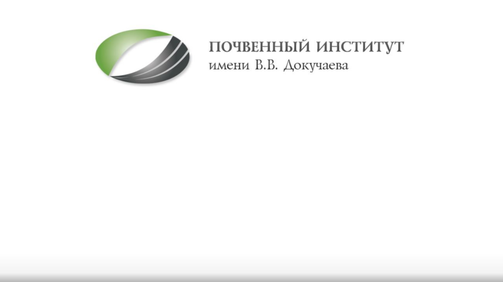
Автоматизация�процессов�создания�
почвенных�БД,�их�хранения,�
обновления�и�анализа
Междисциплинарная лаборатория математического
моделирования почвенных систем
Отв.исп.: Н.А. Васильева
Исполнители: Васильев Т.А., Пашков А.А., Зайцева М.Ф.
(Владимиров А.А.)
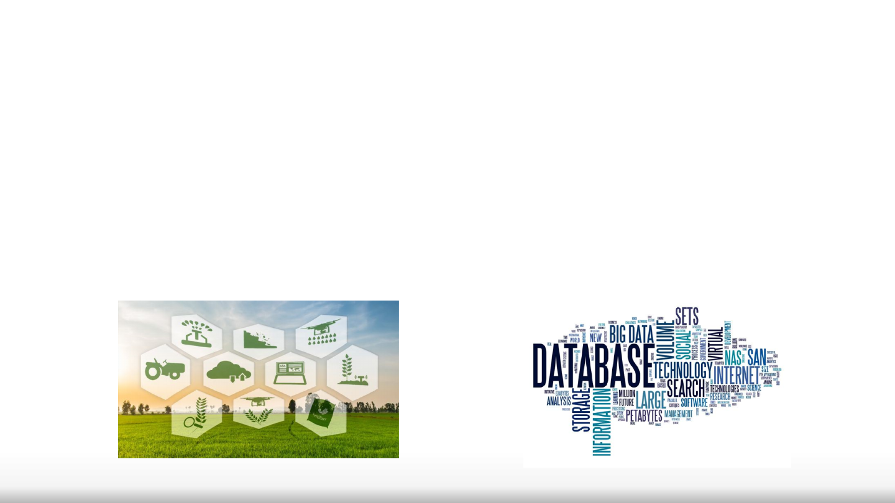
Цель работы:
- централизованная система сбора, хранения и
обработки данных в Институте
- обобщенный анализ всего потока почвенных данных
Содержание
1. Общее описание системы
- RunaWFE для регистрации, согласования и ведения заявок в ИЛЦ
2. Текущая ИС: созданная инфраструктура, сотрудники
- Сбор метаданных об образцах
- Работа конкретного процесса ИС, созданного для ИЛЦ
3. Отчетность и представление данных
4. Расширение работы ИС на другие подразделения Института
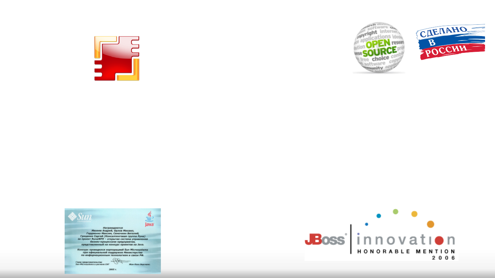
RunaWFE
Разработка и сопровождение системы управления бизнес
-процессами
Статус Honorable Mentions на конкурсе JBoss
Innovation Award в двух категориях: Управление
бизнес-процессами и Хранение информации
Дипломант конкурса Java-технологий, проводившимся
корпорацией Sun Microsystems при официальной
поддержке Министерства информационных
технологий и связи РФ.
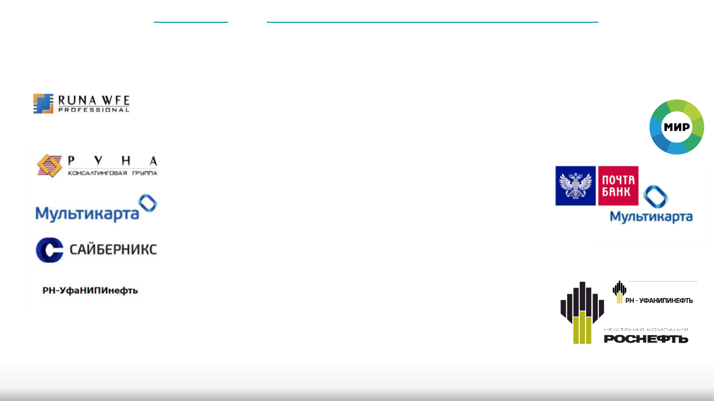
Где используется подобная система
Компания основана в 1992 году и на сегодняшний день занимает одну из
ведущих позиций в сфере распространения правовой информации и
оказания консалтинговых услуг.
ООО «МультиКарта» — российская процессинговая компания, которая
предоставляет спектр услуг для финансово-кредитных организаций. До
2017 входит в группу ВТБ, в 2017 куплена “Почта Банк”.
Компания «Сайберникс» является ключевым поставщиком услуг по
тестированию критичных систем банка: Siebel, Интернет банк,
Банковские core системы FlexCube, Платежный хаб (Payment Hub).
Научно-исследовательский и проектный институт, ведущий работу по главным направлениям
деятельности блока «Разведка и добыча», «Поверхностное обустройство» и «Всестороннее
интегрированное проектирование» по крупнейшим месторождениям ПАО НК «Роснефть».
Профессиональная версия системы RunaWFE Professional внесена в Единый реестр российских программ для электронных вычислительных машин и баз данных под номером 951 по классу
ПО "системы управления процессами организации"

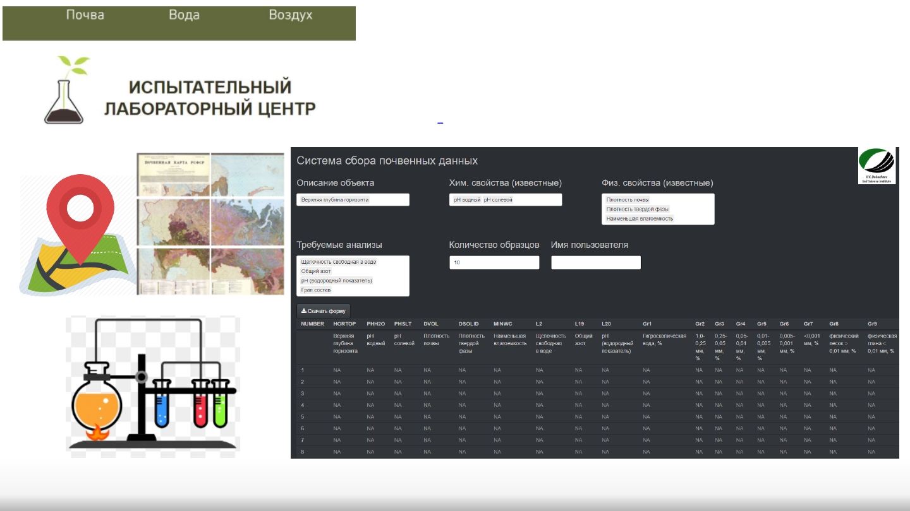
Сбор метаданных по формату ЕГРПР
для заявки в ИЛЦ
Скачивается стандартизированный excel файл заявки с соотв. закладками
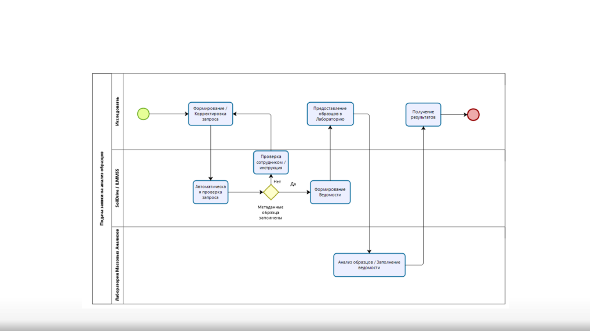
Идея схемы автоматизированного процесса подачи заявок в лабораторию ИЛЦ (было
предложено к разработке с 2019г)
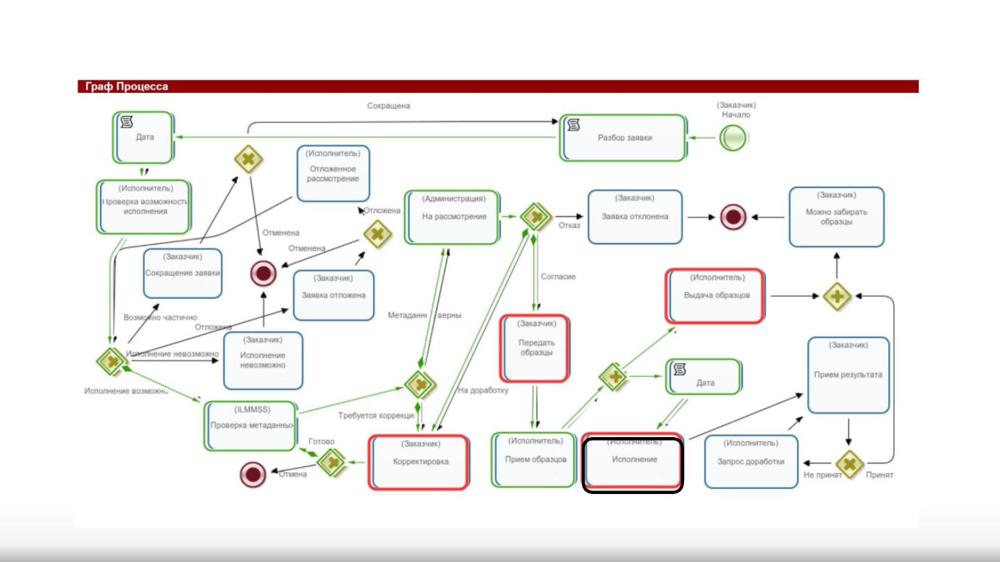
Разработанный граф процесса заявки в ИЛЦ.
черная рамка - текущая еще невыполненная задача; красные рамки - превышен лимит времени на
исполнение; зеленые стрелки - реально пройденный путь заявки; статус изменяется в реальном времени.
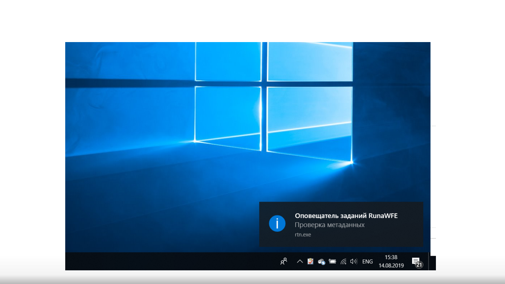
Настроены автоматические оповещатели заданий для сотрудников
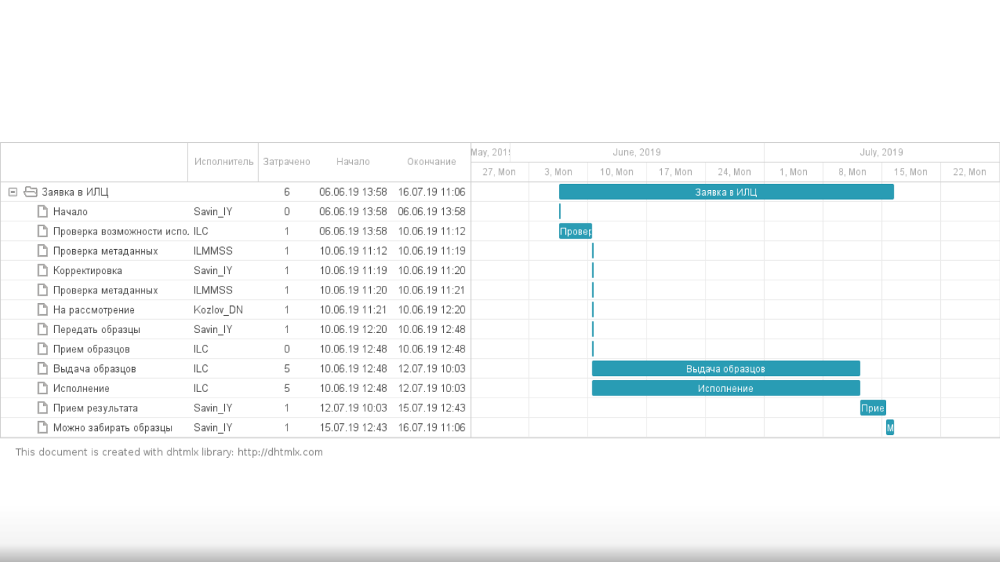
Пример. Диаграмма Ганта для процесса # 23
Обновление информации для выпуска
ЕГРПР 2.0
При заполнении метаданных образцов необходимо:
- определение сотрудником ID почвы по ЕГРПР (возможно добавление ссылки на карту
Столбового В.С., если она есть), тогда результаты анализов могут обновлять диапазоны
значений показателей почвы с данным ID;
- при невозможности присвоить почве один из существующих ID для данного географического
контура, описание почвы может быть обработано таксономистом и после проведения
соответствующего обследования на предмет распространения в этом районе таких почв, новый
ID обновляет список имеющихся для данного региона;
- можно добавить в ИС классификаторы и справочники из ЕГРПР (актуально для мобильной
версии при описании почвы в поле по формату ЕГРПР)
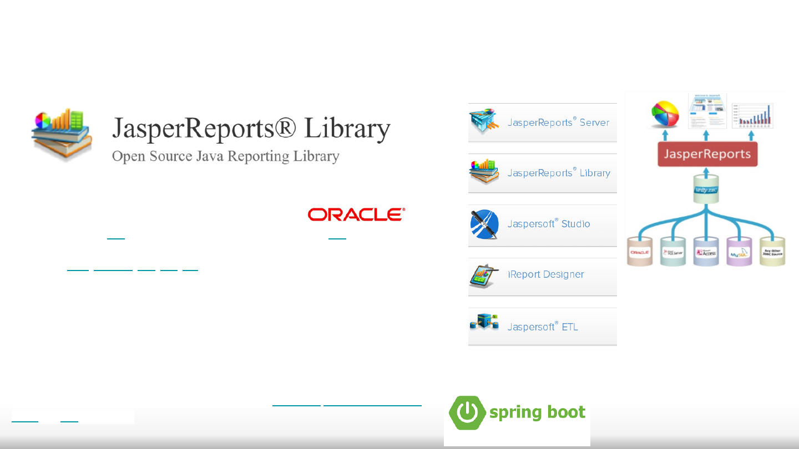
Отчетность и представление данных
JasperReports — это Java-библиотека для создания отчётов. На основе XML-шаблонов отчётов
генерируются готовые для печати документы, консолидирующие данные из различных
источников (JDBC, JavaBean, XML, CSV, XLS).
Графические дизайнеры для JasperReports:
iReport - графический редактор для работы в среде NetBeans IDE (Oracle);
Jaspersoft Studio - порт для IDE Eclipse;
Spring Framework (или коротко Spring) — универсальный фреймворк с открытым исходным
кодом для Java-платформы.
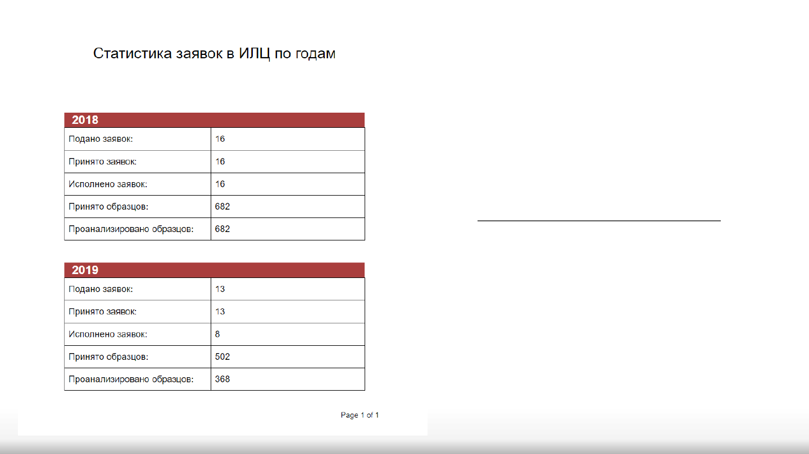
Реализован сценарий
автоматической генерации
отчета.
Следующие расширение отчета:
По подразделениям
По НИРам
По анализам/приборам
Ближайшие обновления ИС
- ввод в схему для ИЛЦ заказчика (ответственного сотрудника), кроме руководителя НИР
- разбивка отчета по анализам и подразделениям
- приведение в соответствие списка анализов ИЛЦ по показателям ЕГРПР
- предложить простой выбор и ввод ID почвы по ЕГРПР (или вариант что ни один не
подходит - это случай для проведения доп.обследований)
- масштабировать процесс подачи заявок на анализы для всех других анализов/приборов
Института (для этого нам нужны: списки их анализов и форматы получаемых результатов)
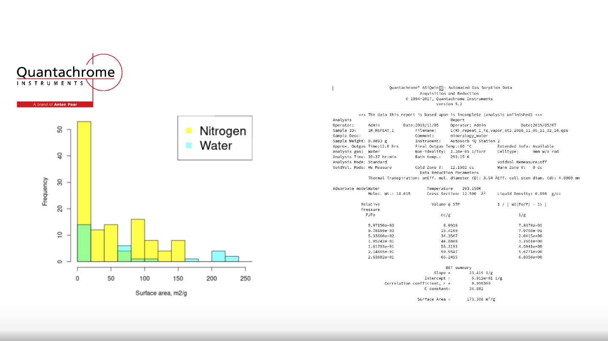
Удельная поверхность измеренная на сорбтометре Накопленные данные с
сорбтометра на 15 июня
120 измерений по азоту 29 измерений по “воде”
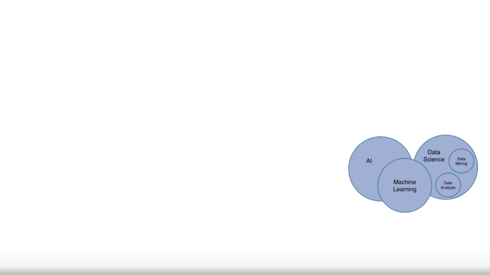
Предполагается, что система станет платформой автоматизации процесса научных
исследований и будет обеспечивать необходимую функциональность для
•Загрузки, хранения, поиска и обработки почвенных данных: от помощи при полевых исследованиях до использования в
публикациях
•Оцифровки существующих архивов
•Поиска неточностей и исправления ошибок в данных и справочно-методической информации
•Научно-обоснованного уточнения классификаций и пополнения ЕГРПР
•Машинного анализа данных
•Математического моделирования
•Обмена данными между подразделениями института и с внешними системами
•Координации совместной работы сотрудников над проектами
• Мониторинг измерительной базы, временных затрат звеньев цепи анализа, пропускной способности, узких мест и т.д.
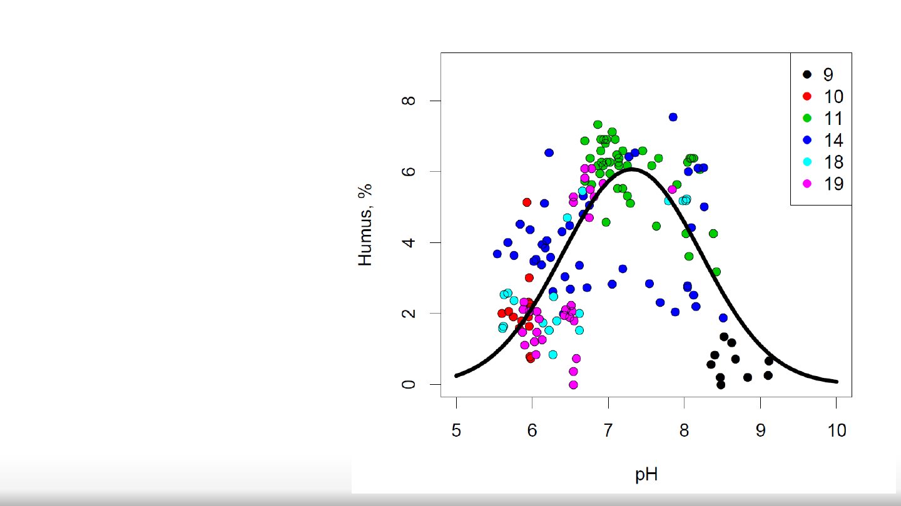
Зависимость содержания гумуса в
почвах от pH почвы на 160
образцах из 6 заявок 2018-2019 гг.
Анализ данных
Номер заявки